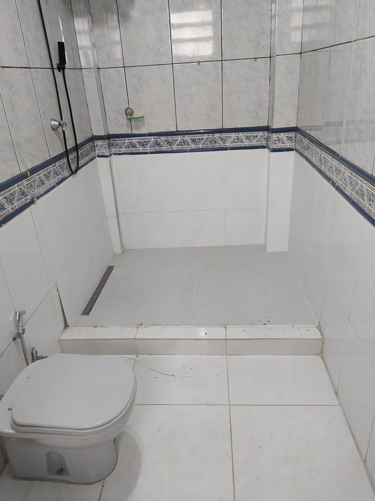

Pintura e acabamento
Preparação de paredes, massa corrida e pintura interna ou externa.
A Technos Construção executa reformas em Santos, reunindo serviços de pintura, pisos e revestimentos, alvenaria, impermeabilização e manutenção conforme a necessidade de cada imóvel.

TECHNOS CONSTRUÇÃO
Atendimento em Santos e região.
Cada obra é avaliada de acordo com o estado do imóvel e o resultado desejado.
Preparação de paredes, massa corrida e pintura interna ou externa.
Instalação, substituição, rejuntamento e correções de acabamento.
Construção e reparo de paredes, muros, reboco e outras correções.
Tratamento de infiltrações e áreas afetadas por umidade.
Reparos e melhorias para imóveis residenciais, comerciais e condomínios.
Escopo, prazo e condições são definidos de acordo com cada trabalho.